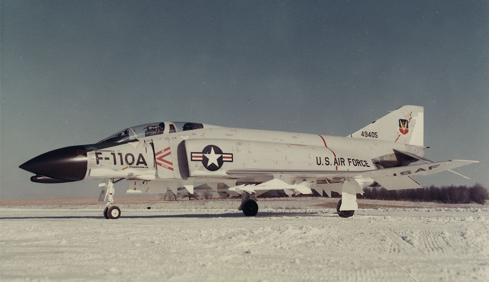
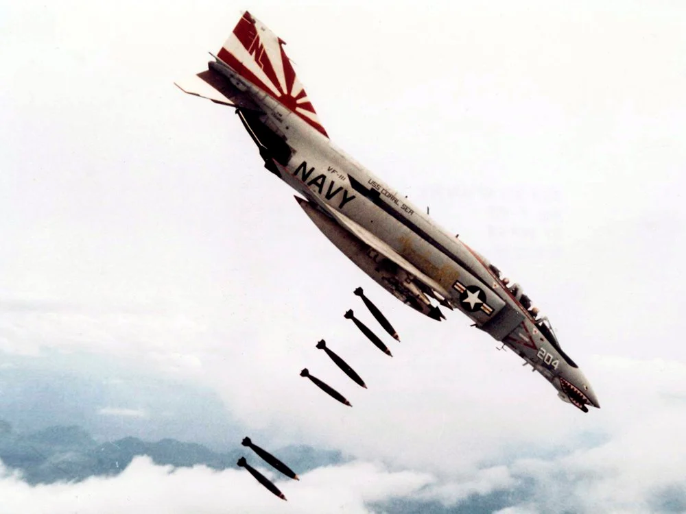

F-4
맥도널 더글러스 F-4 팬텀은 맥도널 더글러스사가 제작한 2인승, 초음속, 장거리, 전천후 전폭기이다. 원래 정식 이름은 F-4 팬텀II(영어: McDonnell Douglas F-4 Phantom II)이다.
처음에 미 해군을 위해 만들어졌지만, 이후 미 해병이 사용하였고, 그 뒤에는 미 공군이 사용하였다. 1961년부터 1996년까지 운용되었다. 팬텀은 다른 나라에서는 아직도 사용중이다. 미국에서 운용중일 때의 별명은 "Rhino" , "Double-Ugly"/"DUFF"이었다.
팬텀은 미 해군, 해병, 공군이 모두 운용하였던 몇 안되는 비행기들 가운데 하나이며 2차 대전 후의 군용기 중 가장 오래 운용한 것들 중 하나이기도 하다.
팬텀은 원래 미 해군의 함대 방어용으로 개발되었다. 1958년 5월 27일 처녀비행한 이후, 최초의 F4H-1 (후에 F-4B가 됨)가 1961년에 실전배치되었다. 이후 당시 맥나마라 미 국방장관의 기종 공통화 지시에 따라 미 공군도 미 해군으로부터 몇 대의 기체를 빌려서 근접공중지원(CAS), 요격(interception), 제공권 확보 등의 부문에서 팬텀을 평가했고 1962년 미 공군용 F-4C를 승인했다. F-4C는 처녀비행을 1963년 5월 27일에 했고, 양산기 인도(production deliveries)를 1963년 11월부터 시작했다.
미 공군은 1967년부터 M61 Vulcan 20 mm 기관포를 내부에 탑재한 F-4E로 교체했다. 116대의 F-4E는 후에 방공망 제압 "Wild Weasel" 역할을 위해 F-4G로 개조되었다.
정찰기 버전 또한 생산되었다. 미 공군용으로는 RF-4C, 미 해병을 위한 RF-4B, 수출용인 RF-4E가 있다. 대한민국 공군도 주한 미공군이 운용하던 RF-4C를 인도받아 현재 운용하고 있다.